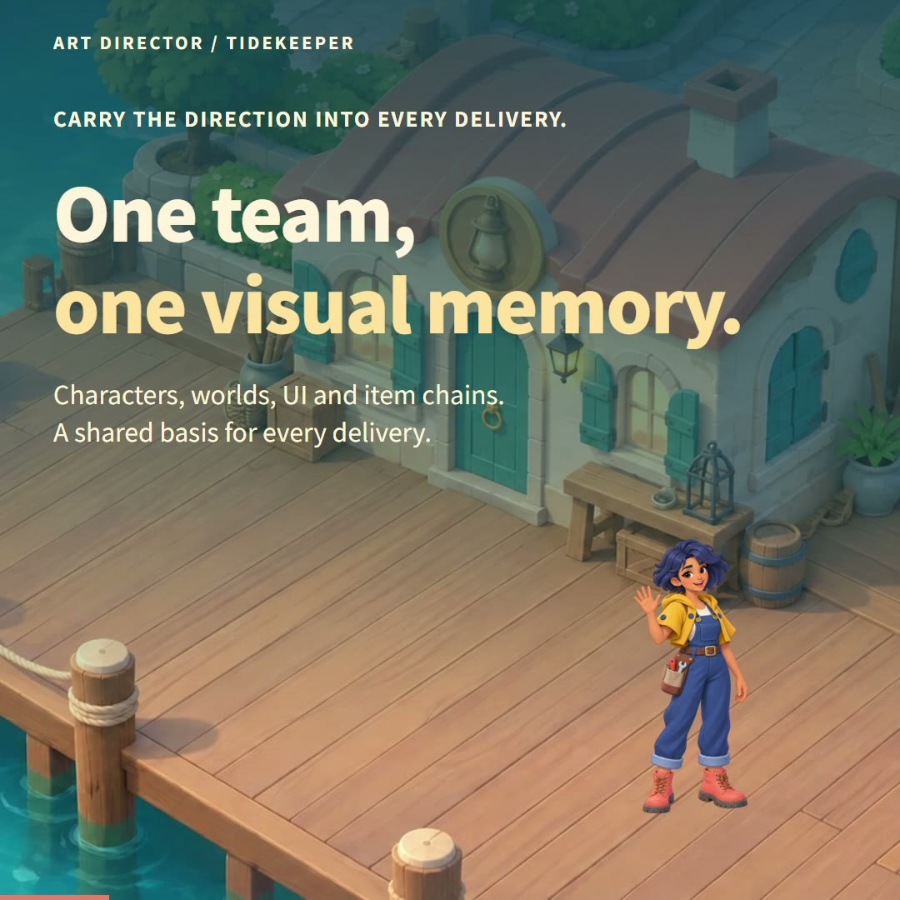
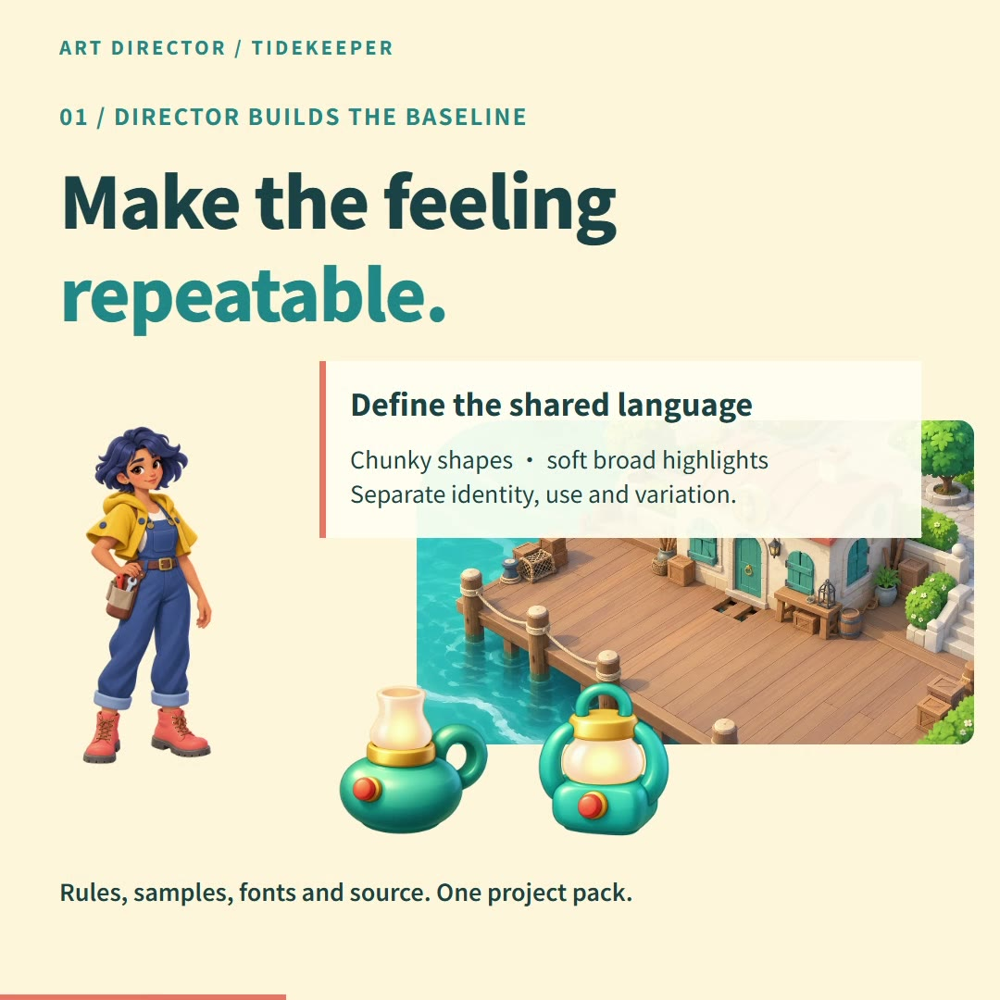
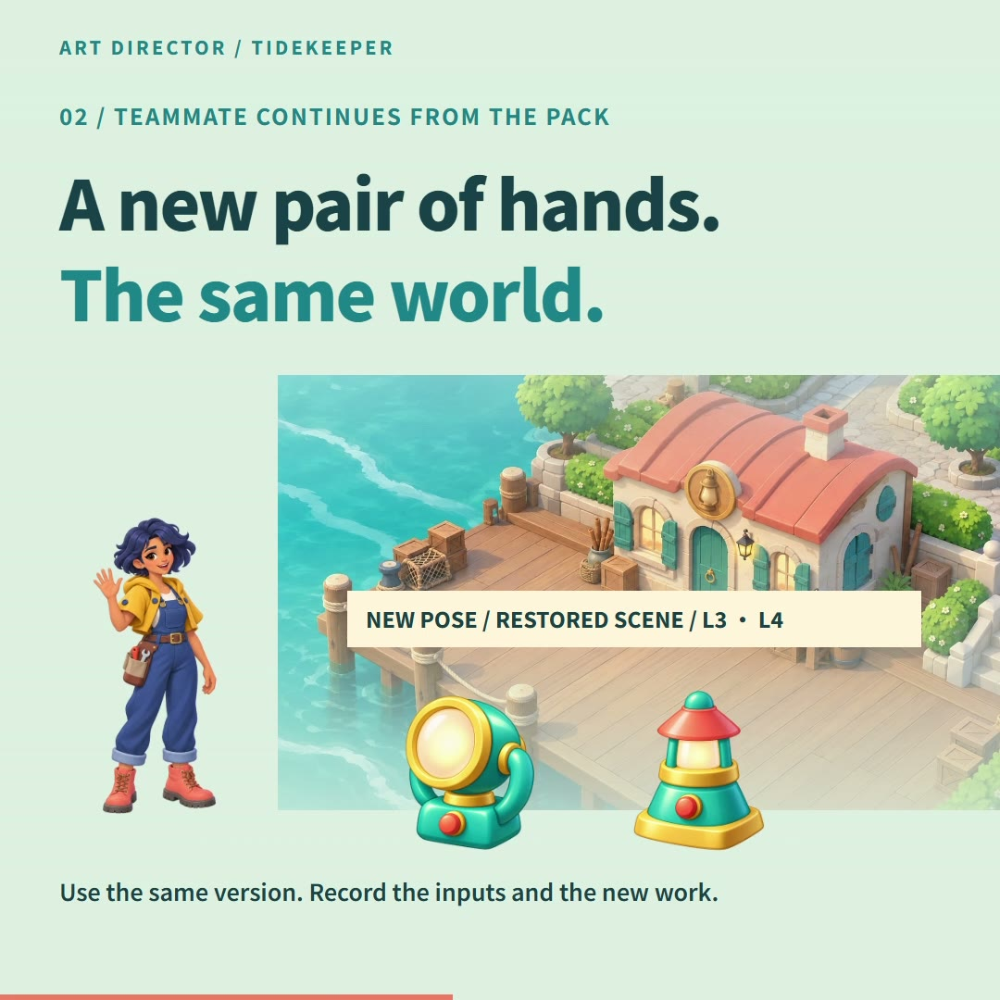
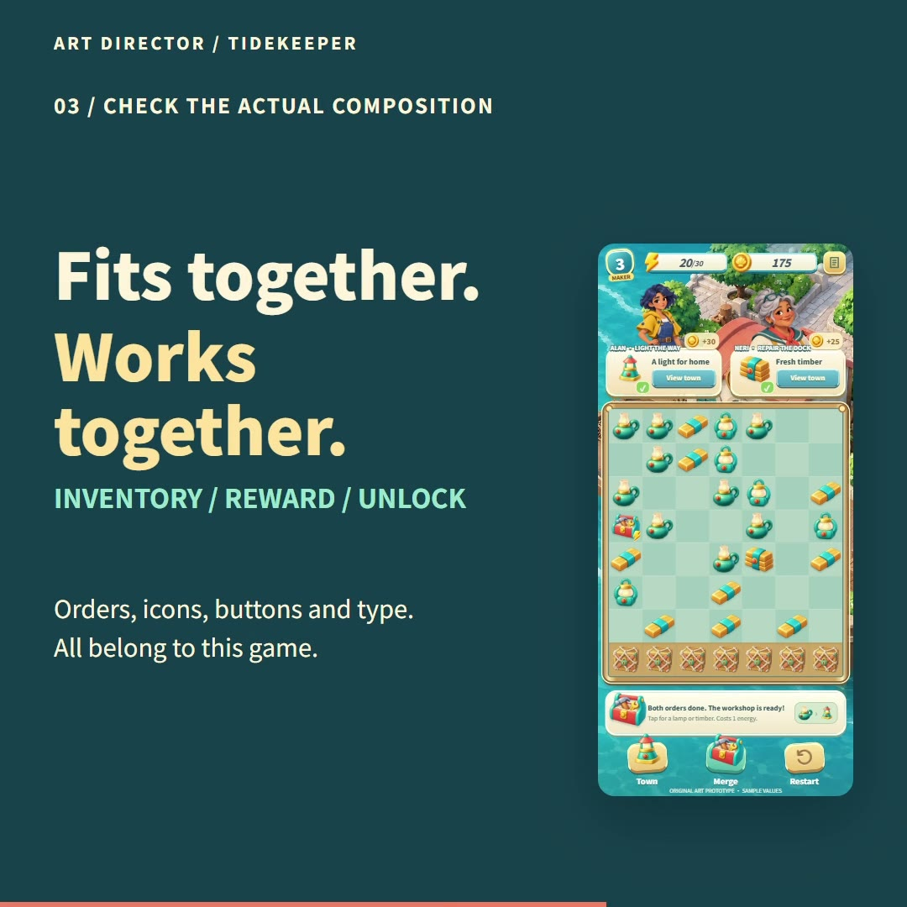
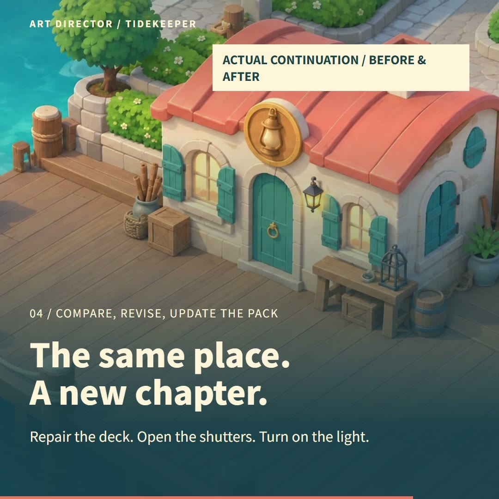
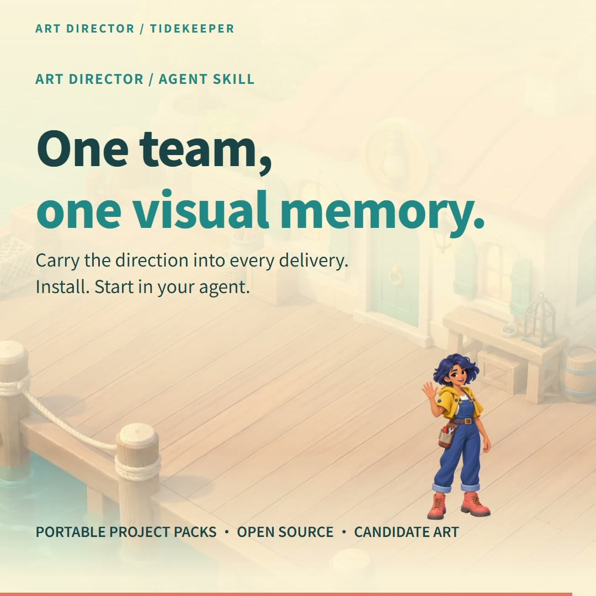
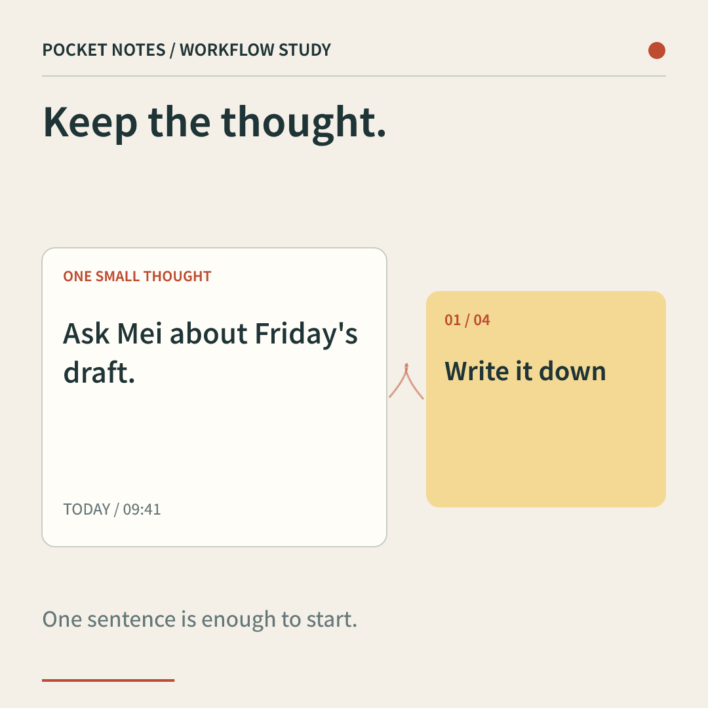
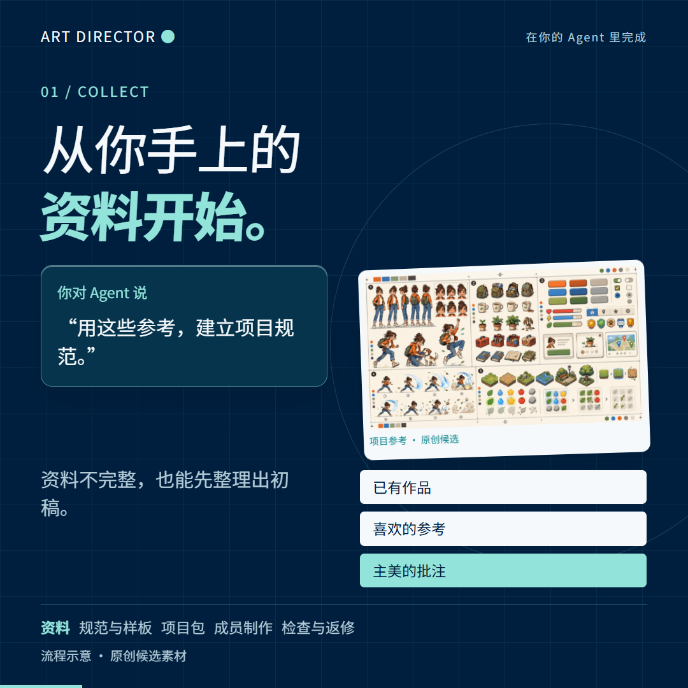

Let the work
speak.
Turn finished artwork and product details into a complete introduction. Worlds, characters and working interfaces, each with a scene of their own.
A 24-second story of shared art direction, merging lamps and bringing a harbor workshop back to life.
A rich world.
A complete story.
Built from finished character art, environments, lamps and game UI. Every image below comes from the selected film.






Find the right
form for your story.
Start with the latest illustrated case, explore a focused product workflow, or revisit the earlier motion studies.
Tidekeeper ↗
Finished environments, characters, objects and editable game UI. Six 24-second films, composed for each format.

Pocket Notes ↗
Capture, organize, save and come back. Six focused 16-second product demonstrations.

Art Director · Original study ↗
An earlier blue-green visual system, with every scene rearranged for three aspect ratios.